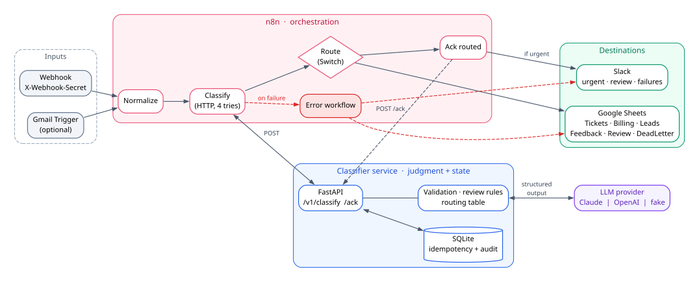
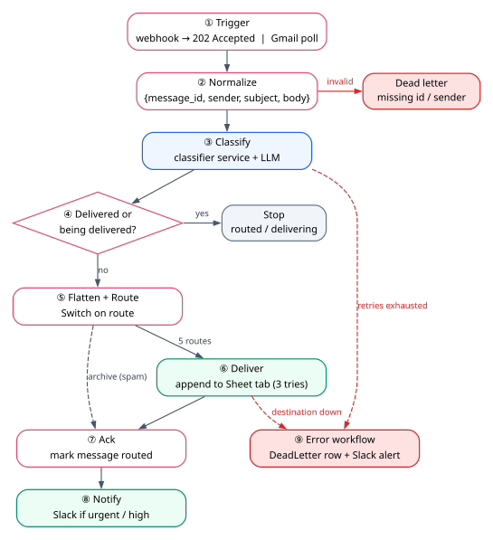
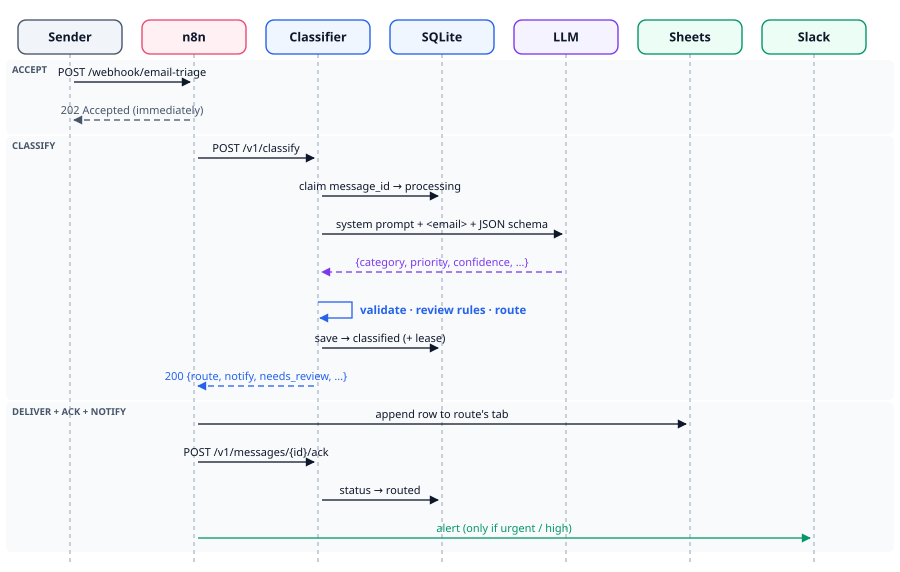
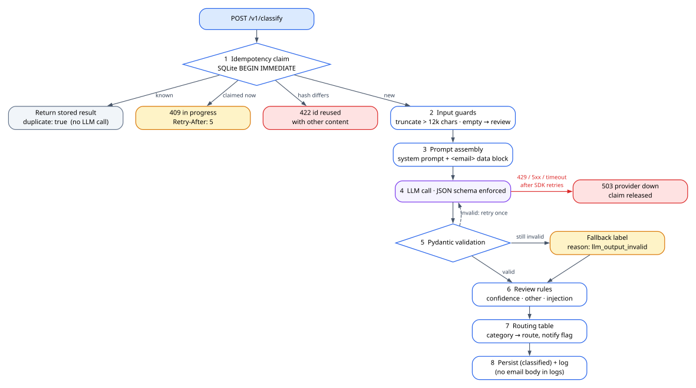
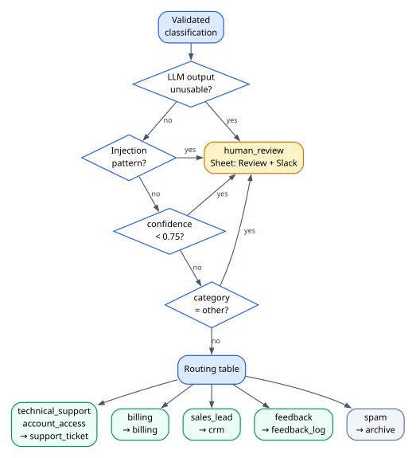
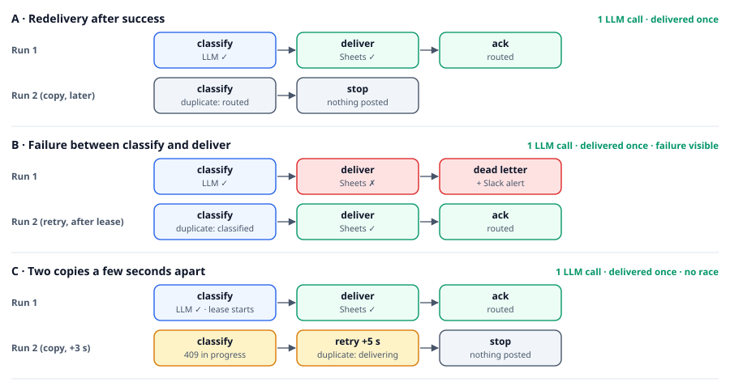
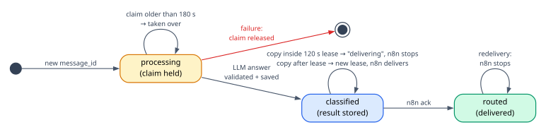
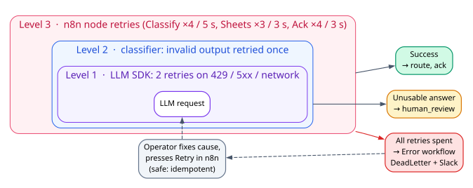
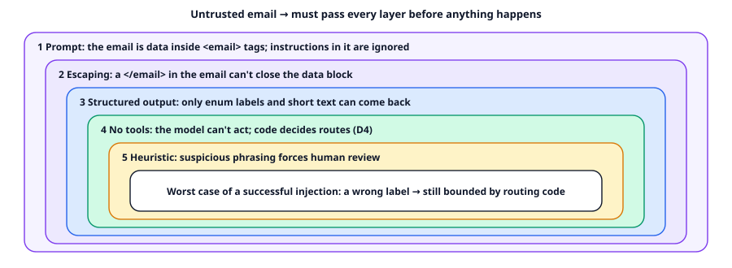

message_id, a delivery lease, retries at three levels, and a dead-letter queue..env, and email bodies never written to logs.The same colours are used in every figure:
Solid arrows are the normal path. Dashed arrows are replies, retries, or paths taken only when something goes wrong.
A small B2B software company runs one shared inbox (support@). Everything lands there: bug reports, refund requests, locked-out users, sales enquiries, feature ideas, phishing and SEO spam. Someone has to read every email to decide where it goes. That costs time, urgent problems wait behind newsletters, and sales leads go cold.
Goal: every incoming email is labeled within seconds and delivered to the right place. Urgent issues get flagged right away, and anything the system is unsure about goes to a person instead of being guessed.
| Criterion | How it's met |
|---|---|
| Clear-cut emails are routed correctly | LLM classification with a fixed label set, measured with an eval set |
| Unclear emails are never auto-routed wrongly | Confidence threshold plus explicit review rules, all routed to human_review |
| No email lost, none processed twice | Idempotency keyed on message_id, a delivery lease, retries, a dead-letter path |
| Swap LLM vendor without touching the workflow | Provider abstraction behind one HTTP endpoint |
| Auditable | Every result stores the model, prompt version, rationale and review reasons |
These are left out on purpose, to keep the project small and finished: writing reply drafts, multi-language tuning, parsing attachments, and a custom UI. Section 9 lists them as next steps.
| Category | Meaning | Goes to |
|---|---|---|
billing | Invoices, charges, refunds, payment methods, plan changes, VAT | Billing sheet |
technical_support | Something in the product is broken, slow, erroring or confusing | Tickets sheet |
account_access | Login, password reset, 2FA, SSO, adding or removing users | Tickets sheet |
sales_lead | Pricing, demos, upgrades, partnerships | Leads sheet (CRM) |
feedback | Feature requests, praise, complaints with nothing to fix right now | Feedback sheet |
spam | Marketing, SEO offers, phishing, anything not meant for support | Archive |
other | Legitimate email that fits nothing above (job applications, press) | Human review |
Priority is urgent (production down, data loss, security, or the sender can't work at all), high, normal or low. The prompt tells the model to judge urgency from the facts described, not from capital letters or the word "URGENT".
The system has two parts, with a clear split of responsibilities.

Why split it this way? Workflow tools are good at connecting things, and code is better for logic that has to be correct and tested. Putting the decision logic in a service means it has unit tests, an eval harness and version control, and the same service would work behind Make or Zapier unchanged (decisions D1 and D2).
Figure 2 shows the path of one email. Figure 3 shows the same run as messages between the components over time. Each step is then explained with what happens and why it's built that way.


202 straight away, before any LLM work. The classifier writes to its store twice (claim, then result), and n8n acks only after the destination accepted the row.POST /webhook/email-triage, authenticated with an X-Webhook-Secret header) or the Gmail Trigger (disabled by default), which checks an inbox every minute..env at startup, so it never appears in git.{message_id, sender, subject, body, received_at}. If message_id or sender is missing, it throws an error.An HTTP Request node calls POST /v1/classify with a shared X-API-Key. It retries up to 4 times, 5 s apart, with a 90 s timeout. Figure 4 shows what happens inside the service.

/v1/classify. The request can end in five ways: a stored result (duplicate), 409, 422, 503, or a new classification. Only the last two touch the LLM.message_id. If it's new, claim it (processing). If it has been seen, return the stored result with duplicate: true and don't call the LLM again. If another request is classifying it right now, answer 409 with Retry-After: 5. If the ID was used before with different content, answer 422: that's a bug or tampering, so never overwrite.body_truncated: true, so nothing is cut silently. Empty emails skip the LLM and go straight to review.<email> tags. Any </email> inside the email is escaped.output_config.format at effort: low, with the server-side refusal fallback. For OpenAI it's the Responses API with a strict json_schema.notify is set for urgent and high priority.classified), start the delivery lease, and write one JSON log line that never includes the email body.
| Reason code | Trigger |
|---|---|
low_confidence | Self-reported confidence below CONFIDENCE_THRESHOLD (0.75 by default, tuned with the eval) |
category_other | The model said "doesn't fit": exactly what a human should see |
possible_prompt_injection | The email contains phrasing such as "ignore previous instructions" or "classify this as" |
llm_output_invalid | Refusal, truncated output, or off-schema output twice in a row |
empty_message | No subject and no body, so there is nothing to classify (no LLM call) |
For a duplicate, the status the service returns decides what n8n does next:
| Status | Meaning | n8n |
|---|---|---|
routed | An earlier run delivered it | Stop |
delivering | Another run got the result less than 120 s ago and is delivering it now | Stop |
classified | An earlier run classified it but never acked, and its lease has run out, so that run failed | Continue and deliver |

route.| Route | Destination | Notes |
|---|---|---|
support_ticket | Sheet Tickets | technical_support and account_access |
billing | Sheet Billing | |
crm | Sheet Leads | stands in for HubSpot or Pipedrive (D8) |
feedback_log | Sheet Feedback | |
human_review | Sheet Review + Slack | shows the model's best guess and the review reason |
archive | nothing recorded | spam; still acked, so it is never retried |
Sheets nodes retry 3 times. If a destination still fails, the run errors before the ack, so the message stays classified, and a retry after the lease runs out finishes the delivery.
POST /v1/messages/{id}/ack marks the message routed and ends the lease. Acking twice is harmless.The main workflow names an error workflow. Any unhandled failure starts it: a bad payload, the classifier unreachable after retries, a provider outage, or a destination still failing after retries. It builds a dead-letter row (time, execution link, failed node, error), appends it to the DeadLetter sheet, and posts a Slack alert. If the sheet fails too, the Slack alert is still sent.

processing is a short claim, classified holds the answer, and routed means delivered. Loops on a state are duplicates arriving, or a claim taken over after the previous holder disappeared.BEGIN IMMEDIATE, which takes the write lock up front, so "read the state, then insert" can't interleave between concurrent requests. This is the same idea as the Postgres advisory locks in the booking API.processing row would otherwise block the message forever. After the TTL, the next request takes the claim over.delivering; after it, the next duplicate takes over delivery.message_id with different content gets 422, as with Stripe's idempotency keys.ROUTE_BY_CATEGORY = {
billing: billing, technical_support: support_ticket,
account_access: support_ticket, sales_lead: crm,
feedback: feedback_log, spam: archive,
other: human_review,
}
A unit test checks that every category has a route, so adding a label without a destination fails CI.
| Endpoint | Success | Errors |
|---|---|---|
POST /v1/classify | 200 + result | 401 bad key · 409 in progress (Retry-After: 5) · 422 invalid or ID reused · 500 provider misconfigured · 503 provider down (Retry-After: 30) |
POST /v1/messages/{id}/ack | 200 | 404 unknown · 409 still processing |
GET /v1/messages/{id} | 200 + stored result | 404 |
GET /healthz | 200 | none |
The status codes are chosen so that n8n's generic "retry on failure" does the right thing. 409 and 503 are temporary and clear up on retry. 422 and 500 won't, so once the retries are used up they land in the dead-letter path, where a person looks at them.

| Failure | Detected by | Handling | End state |
|---|---|---|---|
| Wrong or missing webhook secret | n8n header auth | 403, no execution | Nothing processed |
| Payload missing id or sender | Normalize throws | Error workflow | Dead letter + Slack alert |
| Classifier down or restarting | HTTP error | 4 tries × 5 s, then error workflow | Dead letter; retrying later is safe |
| LLM rate limit, 5xx or timeout | SDK retries ×2, then 503 | n8n retries, then error workflow | Dead letter; nothing billed twice |
| Wrong API key or model name | 500 | Error workflow | Dead letter + alert (needs an operator) |
| Refusal, truncated or off-schema output | Stop reason + Pydantic | 1 retry, then fallback label | human_review (llm_output_invalid) |
| The model is unsure | Confidence < threshold | Review rule | human_review (low_confidence) |
| Prompt injection in the email | Pattern + prompt rule | Review rule; label kept but not trusted | human_review |
| Same email redelivered later | Idempotency store | Stored result; routed ones stop | Delivered exactly once |
| Second copy while the first is delivering | Delivery lease | Answered delivering; n8n stops | Delivered once; a failure in the first run is already dead-lettered |
| Two copies at the same instant | processing claim | Second gets 409 and retries | Classified once |
| Process crashes during the LLM call | Claim TTL | Next delivery takes the claim over | Classified once |
| Google Sheets or its auth fails | Sheets node after 3 tries | Error workflow, before the ack | Dead letter; stays classified, and a retry after the lease delivers it |
| Slack down | HTTP error | Continue anyway | Delivered; ping missed (visible in the execution) |
| Very large email | Length check | Truncated to 12k chars and flagged | Classified on the first 12k chars |
The model only outputs a category, priority and confidence. Routes, notifications and review decisions are deterministic code. So a prompt change can't silently send email somewhere new, a successful prompt injection can at worst change a label (the model has no tools), and routing rules are reviewed and unit-tested like any other code.
other always goes to review, even at high confidence.message_id, with two states and a leaseEmail has a natural unique ID (the Gmail message ID, or the RFC 5322 Message-ID header) that every redelivery source keeps. It is paired with a content hash so a reused ID is caught, not trusted. The classified → routed states and the delivery lease avoid both classic dedupe bugs (Figure 6).
A queue (SQS, RabbitMQ, Vercel Queues) gives durable retries with backoff, and is the right step up at higher volume or with n8n in queue mode. For one inbox (hundreds of emails a day), n8n's execution retry, saved failed executions and a visible dead-letter list are enough, with no extra infrastructure. The idempotent classifier is what makes manual retries safe.
Every client can open a sheet, and it makes the demo visible. In production, each tab maps to a real system (Tickets → Zendesk, Jira or Linear; Leads → HubSpot or Pipedrive), and swapping one is a single node change because the row contract stays the same. A Slack incoming webhook only needs a URL, with no OAuth app, which is enough for one-way alerts.
One classifier replica easily handles an inbox. SQLite in WAL mode with BEGIN IMMEDIATE gives correct concurrent claims with nothing extra to run. With more than one replica, or on serverless hosting, the same state machine moves to Postgres (INSERT … ON CONFLICT plus a row lock). The store is one small class, so the change stays contained.
effort: low. Classification doesn't need deep reasoning, and low effort keeps latency and tokens down without dropping to a smaller model..env change, and should only be made after the eval shows quality holds.Email is untrusted text written by strangers, so no single layer is relied on.

Logs contain IDs, labels and timings, never email bodies. With self-hosted n8n, email content only leaves the client's infrastructure for the LLM API call. n8n keeps execution data, including email content, for debugging; in production, set EXECUTIONS_DATA_MAX_AGE to match the client's retention policy.
| Layer | What it checks | How to run |
|---|---|---|
| Unit and API tests (28) | Routing, review rules, idempotency (duplicate, concurrent, conflict, crash, delivery lease), retries, error mapping, truncation, injection flag, provider response parsing | cd classifier && uv run pytestoffline, about 1 s |
| Eval (quality) | 30 labeled emails, including hard cases: mixed intent, injection, vague one-liners, fake urgency | uv run python -m evals.run_evalreal LLM, costs a few cents |
| End-to-end | The full Docker stack: webhook → n8n → classifier → route → ack, plus the duplicate, concurrent-copy and error paths | LLM_PROVIDER=fake docker compose up, then scripts/send_samples.py |
sales_lead → billing, which show where the prompt needs work.X-API-Key, compared in constant time..env (gitignored); .env.example documents every variable.| Limitation | Next step |
|---|---|
| One classifier replica (SQLite) | Postgres store (D9) |
| Confidence is self-reported | Calibrate the threshold on real traffic; classify twice for borderline cases |
| English-only prompt and eval set | Add multilingual eval cases |
| Replies in an existing thread are classified as new emails | Route by thread ID when an earlier message in the thread is known |
| Attachments are ignored | Classify on attachment text where relevant |
| Review-queue corrections aren't fed back | Turn corrections into new eval cases (the cheapest way to improve the prompt) |
| The Gmail path is wired up but untested end to end | Test it with a demo mailbox |